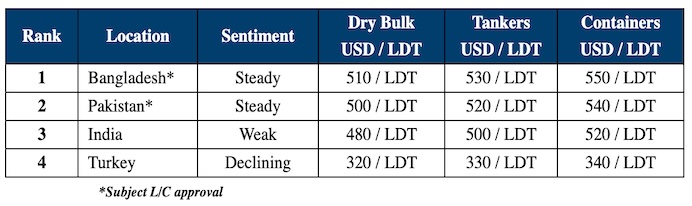

inWeekly Demolition Reports19/03/2024

With the conclusion of week 11, the ongoing & seemingly endless dearth in the supply of viable candidates has beenmercifully keeping the Bangladeshi & Pakistani ship recycling markets steady on the one hand, including this week where it graciously provided our friends and associates celebrating the onset of the Holy month of Ramadan, more time with their families amidst daily prayers and religious celebrations. On the other hand, the Turkish and Indian markets continue to endure their respective shares of a notably trying time, given that the Turkish Lira continues to plummet even amidst a mercifully quieter week (on account of Ramadan), while India continues to endure its share of nerve-racking volatility in local steel plate prices as well as the Indian Rupee, likely on the back of Alang Buyers anxiously anticipating the results of the upcoming General Elections next month, with voting expected to last 7 weeks & the results being announced on June 4th. With any luck, further economic measures to stimulate this lackluster economy will hopefully be implemented by the Modi government, which is expected to win in another landslide election.
Notwithstanding the above, prospects for Alang’s ship recycling sector have not been quite this bad for many a year now, as most domestic Recyclers continue to abstain from the buying even today, rather than conclude at what is only being perceived as loss-making levels in these present times. Moreover, cheap Chinese billets have also started to infiltrate the local market once again and despite prohibitive anti-dumping measures being set in place, this most recent batch of imports is causing much consternation amongst Indian steel traders, as Alang Buyers are still preferring to wait-and-watch market developments even now. The industry’s overall focus has therefore shifted towards a far-firmer Pakistan and Bangladesh of late, given that both markets have come back ever-so strongly since the start of the year, pursuant to an increased rate of L/C approvals & a blistering hunger to acquire tonnage, given that so many yards have been dormant following an unimpressive few quarters ending 2023. All major (sub-continent) recycling market currencies have also been on an overall positive trend of late, except the Turkish Lira, which has displayed no mercy towards its own economy, derailing itself against the U.S. Dollar & nearly declining by about TRY 1 with each passing week.
Overall, as dry bulk markets progressively reach new highs, the supply of tonnage from this sector seems likely to remain agonizingly muted for (perhaps) the remainder of the year, as a quantum of older vessels are apparently earmarked for drydocking, rather than head towards a recycling sale, all while containers too are yet to see any meaningful movement this year as well.
For week 11 of 2024, GMS demo rankings / pricing for the week are as below.

📄 Download PDF: Ship-recycling-market-insight-week-11-2024-Ramadan_Reprieve.pdfSource: GMS,Inc. ,https://www.gmsinc.net/gms_new/index.php/web